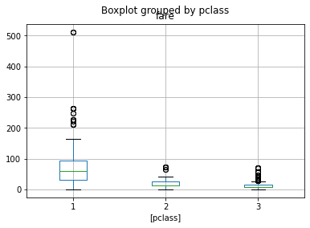
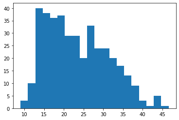
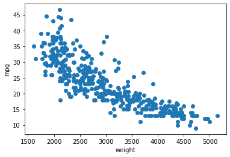

import numpy as np
import matplotlib.pyplot as plt
import pandas as pd
import seaborn as sns9 Boxplots/Correlation
- Boxplots
- Quantiles
- Whiskers
- Histograms and Standard Deviation
Task 0
- Read chapters 1 and 2 in the ThinkStats book in the cloud folder
Explore the Titanic Data
titanic = sns.load_dataset('titanic')
titanic.head()| survived | pclass | sex | age | sibsp | parch | fare | embarked | class | who | adult_male | deck | embark_town | alive | alone | |
|---|---|---|---|---|---|---|---|---|---|---|---|---|---|---|---|
| 0 | 0 | 3 | male | 22.0 | 1 | 0 | 7.2500 | S | Third | man | True | NaN | Southampton | no | False |
| 1 | 1 | 1 | female | 38.0 | 1 | 0 | 71.2833 | C | First | woman | False | C | Cherbourg | yes | False |
| 2 | 1 | 3 | female | 26.0 | 0 | 0 | 7.9250 | S | Third | woman | False | NaN | Southampton | yes | True |
| 3 | 1 | 1 | female | 35.0 | 1 | 0 | 53.1000 | S | First | woman | False | C | Southampton | yes | False |
| 4 | 0 | 3 | male | 35.0 | 0 | 0 | 8.0500 | S | Third | man | True | NaN | Southampton | no | True |
Boxplots
boxplot = titanic[['fare','pclass']].boxplot(by='pclass',return_type='dict' )
Task 1
- Read up the basics of boxplots: https://en.wikipedia.org/wiki/Box_plot, in particular the paragraph explaining the whiskers.
- Read up the definition of Quartiles and Quantiles and IQR. A good source would be the ThinkStats book (in the cloud folder).
- (MC) What are the exact values of the lower and upper whiskers (of fare) for the pclass2 passengers?
- A \([0, 41.6]\)
- B \([0, 45.5]\)
- C \([-6.5, 45.5]\)
- D \([0, 46.1]\)
Recall the Wikipedia definition:
From above the upper quartile, a distance of 1.5 times the IQR is measured out and a whisker is drawn up to the largest observed point from the dataset that falls within this distance. Similarly, a distance of 1.5 times the IQR is measured out below the lower quartile and a whisker is drawn up to the lower observed point from the dataset that falls within this distance.
Task 1.3
- (MC) What are the exact values of the lower and upper whiskers (of fare) for the pclass2 passengers?
titanic[['fare','pclass']].groupby('pclass').describe()| fare | ||||||||
|---|---|---|---|---|---|---|---|---|
| count | mean | std | min | 25% | 50% | 75% | max | |
| pclass | ||||||||
| 1 | 216.0 | 84.154687 | 78.380373 | 0.0 | 30.92395 | 60.2875 | 93.5 | 512.3292 |
| 2 | 184.0 | 20.662183 | 13.417399 | 0.0 | 13.00000 | 14.2500 | 26.0 | 73.5000 |
| 3 | 491.0 | 13.675550 | 11.778142 | 0.0 | 7.75000 | 8.0500 | 15.5 | 69.5500 |
Explore the Auto Data
df = pd.read_csv('../data/Auto.csv')
df.head()
#df.info()| mpg | cylinders | displacement | horsepower | weight | acceleration | year | origin | name | Manufacturer | |
|---|---|---|---|---|---|---|---|---|---|---|
| 0 | 18.0 | 8 | 307.0 | 130 | 3504 | 12.0 | 70 | 1 | chevrolet chevelle malibu | chevrolet |
| 1 | 15.0 | 8 | 350.0 | 165 | 3693 | 11.5 | 70 | 1 | buick skylark 320 | buick |
| 2 | 18.0 | 8 | 318.0 | 150 | 3436 | 11.0 | 70 | 1 | plymouth satellite | plymouth |
| 3 | 16.0 | 8 | 304.0 | 150 | 3433 | 12.0 | 70 | 1 | amc rebel sst | amc |
| 4 | 17.0 | 8 | 302.0 | 140 | 3449 | 10.5 | 70 | 1 | ford torino | ford |
# global mean
df.mean()mpg 23.445918
cylinders 5.471939
displacement 194.411990
horsepower 104.469388
weight 2977.584184
acceleration 15.541327
year 75.979592
origin 1.576531
dtype: float64# mpg mean
a = df["mpg"].mean()
b = df.iloc[:,0].mean()
c = np.mean(df["mpg"])
print(f'mpg mean:\na = {a}\nb = {b}\nc = {c}')mpg mean:
a = 23.44591836734694
b = 23.44591836734694
c = 23.44591836734694#. Plot a histogram of mpg
plt.hist(df["mpg"], 20)(array([ 3., 10., 40., 38., 36., 37., 29., 29., 20., 33., 24., 24., 20.,
17., 13., 9., 3., 1., 5., 1.]),
array([ 9. , 10.88, 12.76, 14.64, 16.52, 18.4 , 20.28, 22.16, 24.04,
25.92, 27.8 , 29.68, 31.56, 33.44, 35.32, 37.2 , 39.08, 40.96,
42.84, 44.72, 46.6 ]),
<BarContainer object of 20 artists>)
#scatterplot
plt.scatter("weight", "mpg",data=df)
plt.xlabel("weight")
plt.ylabel("mpg")Text(0, 0.5, 'mpg')
Task 2
- Compute the mean mpg grouped by cylinder.
- Create a boxplot of mpg vs. cylinder
- Find the median and lower/upper quartiles
- Read up the definition of correlation. ( ThinkStats book in the cloud folder). Compute the correlation coefficient between mpg and weight.
- Compute the correlation coefficient \(\rho\) between mpg and origin. Discuss whether (i) there is a conceptual difference between the previous task, and (ii) whether it even makes sense to compute \(\rho\) for this pair of variables. In that context, learn about categorical data types in pandas.
- What is the correlation coefficient “good for” ? Can you e.g. use it to make predictions, like in our previous simple probability model ? If not, what is missing ? Think about a loss function which would make sense for such a prediction task.